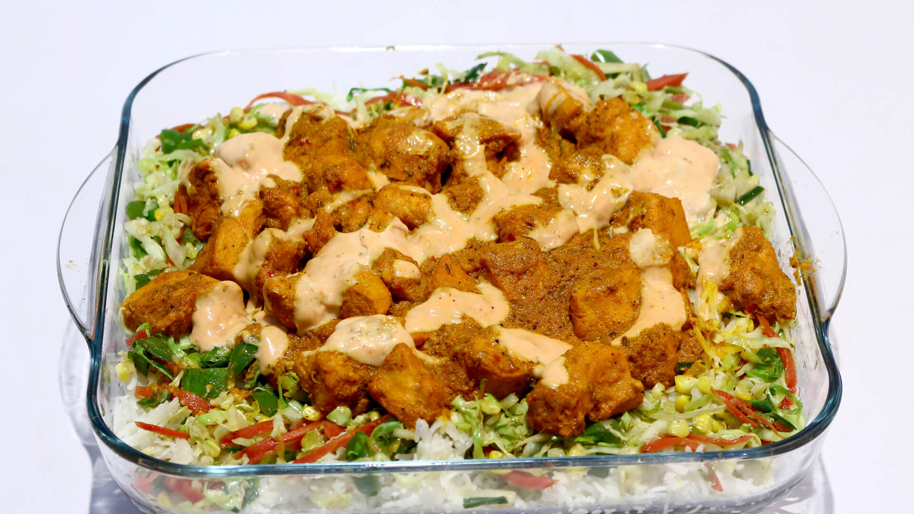

BARBQUE Rice
Ingredients:
- chicken (boneless) - 1/2 kg
-
Chicken tikka masala
-
yougurt - 1 cup
-
ginger garlic paste - 1 tbsp
-
green chili powder - 1 tsp
-
red chili powder - 1 tsp
- mayounise
-
black pepper
-
vegetables
-
oil
- koila
-
tomato sauce
-
milk
-
rice
Instructions:
-
Marinate the chicken with tikka masala, yogurt, ginger garlic paste, green chili powder, red chili powder, mayounise and black pepper. Keep it aside for 30 minutes.
-
Heat oil in a pan and add the marinated chicken. Cook until the chicken is done and has a nice charred look. Remove from heat and set aside.
-
In another pan, heat some oil and add the vegetables. Sauté until they are tender.
-
Add the cooked chicken to the vegetables and mix well.
-
Add tomato sauce and a little milk to the mixture. Cook for a few more minutes until everything is well combined.
-
In a separate pot, cook the rice according to package instructions.
-
Serve the barbecued chicken mixture over the cooked rice.
- AND THEN ENJOY YOUR MEAL
